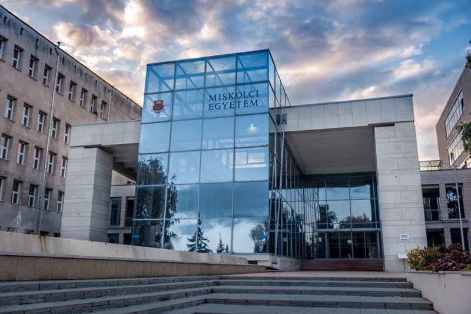

Üdvözlöm a honlapomon!
Adatbázisrendszerek
HTML 5 nyelv alapjai
Prezentáció készítése
Forrás:
Farkas Csaba - Fodor Gábor Antal: Windows 10 és Office 2016 középfokon.
Budapest: Jedik Oktatási Stódió, 2016.